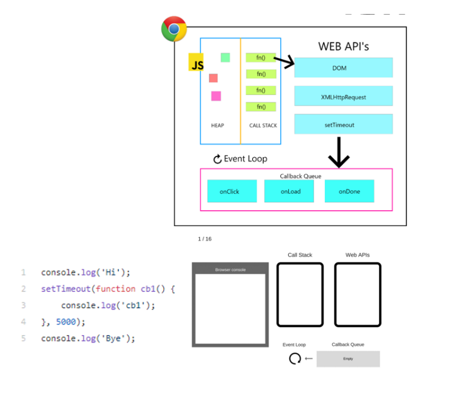

<!DOCTYPE html>
<html lang="en">
<head>
	<meta charset="UTF-8">
	<meta http-equiv="X-UA-Compatible" content="IE=edge">
	<meta name="viewport" content="width=device-width, initial-scale=1.0">
	<title>Event Loop</title>
</head>
<body>
	<h1>Abra o console</h1>
	<h2>Programação assíncrona com JavaScript</h2>
<p>O funcionamento do processamento de instruções do JavaScript, em geral,
se dá através da call stack, que é uma pilha lógica onde as instruções são executadas uma a uma sequencialmente.</p>

<p>Entretanto, existem algumas operações no ecossistema JavaScript que
podem ser lentas, como por exemplo as requisições HTTP. Essas são lentas porque
parte do processamento depende do computador no destino (servidor) e do tráfego
de rede. Por exemplo, assim não é possível prever quando a resposta estará pronta, mas é possível determinar o que deve fazer com a resposta quando ela "chega".</p>

<p>Para esses casos o JavaScript, por padrão, não espera a execução; o que
faz total sentido, pois caso contrário a aplicação poderia travar, o que prejudicaria muito a experiência do usuário. Para isso, o JavaScript utiliza internamente umrecurso conhecido como event loop. O event loop está presente internamente nos diversos ecossistemas onde o JavaScript pode atuar (Node.js, web etc.).</p>

<p>No caso da web, onde há DOM, instruções consideradas potencialmente
lentas situam-se em uma camada lógica conhecida como Web API's, cuja
responsabilidade de execução é do navegador. Cada instrução desse tipo entra em
uma fila denominada callback queue, que executa as instruções uma a uma sempre
que houver disponibilidade, ou seja, sempre que o event loop sinalizar. Isso é feito monitorando a call stack, que é a pilha de execução de instruções padrão. Com isso, a execução do fluxo principal do JavaScript não para e essas instruções são retornadas e os dados processados sempre que possível.</p>

<p>Entretanto, cabe ao desenvolvedor implementar um recurso para capturar o
momento em que essas instruções finalizam e por fim trabalhar com os dados
retornados. Em linha gerais, esse recurso é conhecido como callback, que é
representado por uma função passada por parâmetro para esse tipo de instrução.</p>
<p>A Figura abaixo demonstra o funcionamento básico do event loop.</p>


<p>Analisando a Figura acima é possível perceber que os eventos do DOM (que
	já foram vistos anteriormente), requisições HTTP e manipulação de tempo
	(setTimeout/setInterval) são exemplos de instruções que são executadas com o apoio
	do event loop e permitem a programação assíncrona com JavaScript. Quando o
	assunto é programação assíncrona, lembre-se sempre do quando, que é a palavrachave nesses casos.
	Para mais de</p>

<script src="js/eventLoop.js"></script>
</body>
</html>
